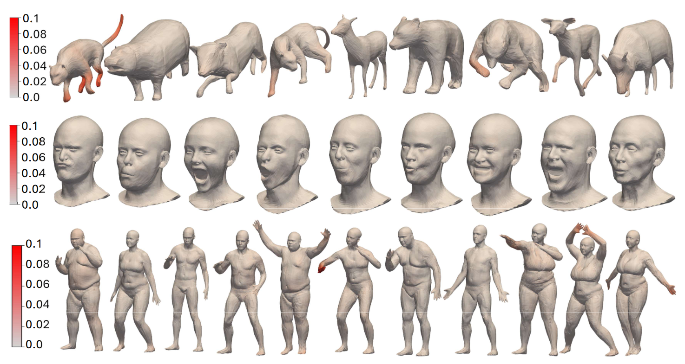
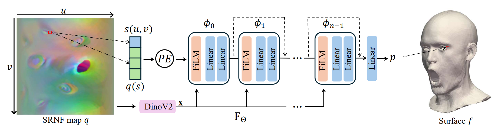

NeuralSRNF: Neural Square-Root Normal Fields for the Statistical Analysis and Generation of Nonrigid 3D Objects
- Awais Nizamani Murdoch University, Australia
- Hamid Laga Murdoch University, Australia
- Guanjin Wang Murdoch University, Australia
- Farid Boussaid The University of Western Australia, Australia
- Mohammed Bennamoun The University of Western Australia, Australia
- Anuj Srivastava John Hopkins University, USA
Abstract
We introduce NeuralSRNF, a novel framework for the statistical shape analysis and generation of genus-zero 3D objects that undergo non-rigid deformations. Traditional methods rely on complex and computationally expensive nonlinear elastic metrics that measure bending and stretching. Recent advances in elastic shape analysis achieve computational efficiency by mapping input 3D shapes to the space of Square Root Normal Fields (SRNFs) where the complex elastic metric becomes an L2 metric, significantly facilitating the process of computing geodesics and summary statistics. SRNFs, however, are not invertible and the numerical algorithms used to map SRNFs back to the original space of surfaces remain computationally very expensive and often lead to approximate results. This paper addresses this fundamental SRNF inversion problem using a novel neural representation, termed NeuralSRNF. Unlike the commonly used numerical SRNF, NeuralSRNF is (1) continuous, and thus resolution agnostic enabling full functional shape analysis, (2) more accurate, and (3) computationally more efficient as it can compute inverse SRNF maps in less than 3 secs compared to over 10 mins in the numerical SRNF. We demonstrate, using various datasets, the utility and efficiency of the proposed NeuralSRNF in multiple elastic 3D shape analysis tasks such as geodesic computation, deformation transfer, statistical summaries computation, and 3D shape generation. We show that it outperforms the state of the art by a wide margin in both accuracy and computational efficiency.
Neural SRNF inversion results for 3D humans, animals, and faces

NeuralSRNF inversion of 3D shapes
Geodesics videos for animals
Geodesics videos for humans
Neural SRNF network architecture
